4.4 인스턴스 (Instances)#
VirtOn의 인스턴스 관리 화면으로, 개별 인스턴스의 생명주기(Lifecycle)와 자원을 실시간으로 제어하는 핵심 기능을 담고 있습니다.
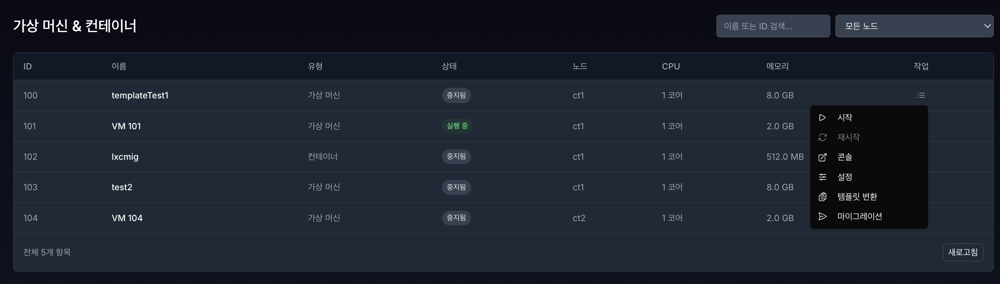
사용 전 확인사항#
구분 |
내용 |
|---|---|
필요 권한 |
VM/CT 생성, 삭제, 전원 제어, 콘솔 접속, 리소스 변경은 사용자 역할과 Pool 할당 범위에 따라 허용 여부가 달라집니다. |
외부 IT실체 |
모든 제어 작업은 Proxmox VE API를 통해 수행되므로 API 연결이 정상이어야 합니다. |
사전 조건 |
대상 노드, 스토리지, 네트워크 브리지, ISO 또는 LXC 템플릿이 준비되어 있어야 합니다. |
감사기록 |
VM/CT 생성, 삭제, 전원 제어, 콘솔 접속, 백업, 스냅샷 작업은 감사기록 또는 작업 이력 확인 대상입니다. |
4.4.1 가상 머신 & 컨테이너 목록 관리#
4.4.1.1 인스턴스 목록 조회#
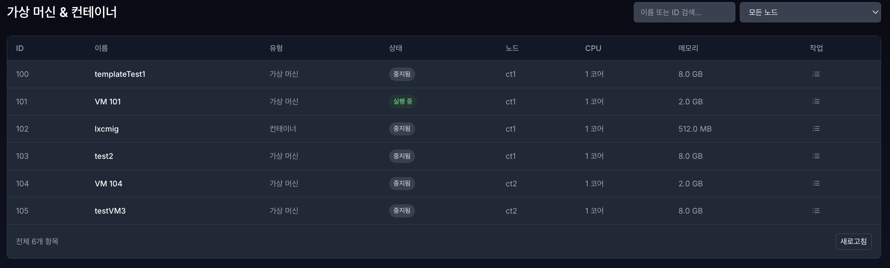
현재 구성되어있는 클러스터 내에 모든 노드의 인스턴스 목록들을 조회 가능합니다. (ID, 이름, 유형, 상태, 할당 리소스)
4.4.1.2 인스턴스 검색 및 필터링#
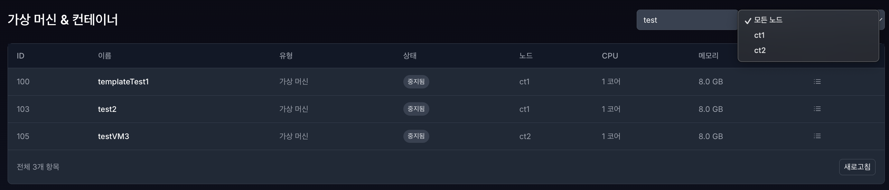
메인페이지 우측 상단에 인스턴스 이름을 입력하여 검색할 수 있으며, 현재 구성되어있는 클러스터의 노드를 필터링하여 검색할 수 있습니다.
4.4.1.3 전원제어#
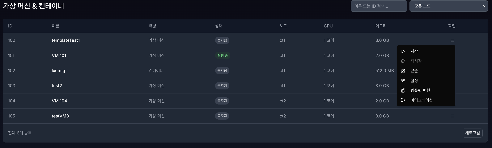
제어하려는 가상머신 & 컨테이너 우측에 작업 목록 버튼을 클릭 하면 제어 메뉴가 표시됩니다. (시작, 중지, 재시작)
시작 / 연결 / 중지: 인스턴스와의 콘솔 세션을 활성화하거나 안전하게 종료합니다.
콘솔: 별도의 브라우저 창에서 콘솔을 실행하여 멀티태스킹 환경을 지원합니다.
설정: CPU, 메모리 등 할당된 자원을 수정합니다.
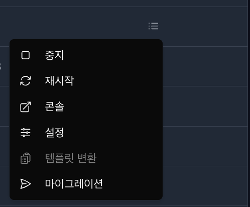
VM/CT 가 중지됨 상태일 때 → 시작, 재시작 비활성화
VM/CT 가 실행중 상태일 때 → 중지, 재시작 활성화
전원 제어가 실패하면 대상 VM/CT의 현재 상태, Proxmox API 연결 상태, 계정 권한을 확인합니다.
4.4.2 인스턴스 생성 (VM/CT 생성)#
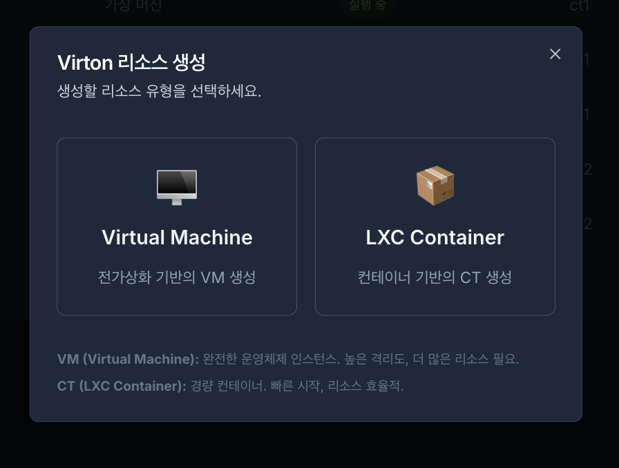
우측 상단에 VM/CT 생성 버튼을 클릭하면 가상머신 또는 컨테이너를 선택 생성할 수 있는 창이 표시됩니다.
4.4.2.1 VM 생성 (Virtual Machine)#
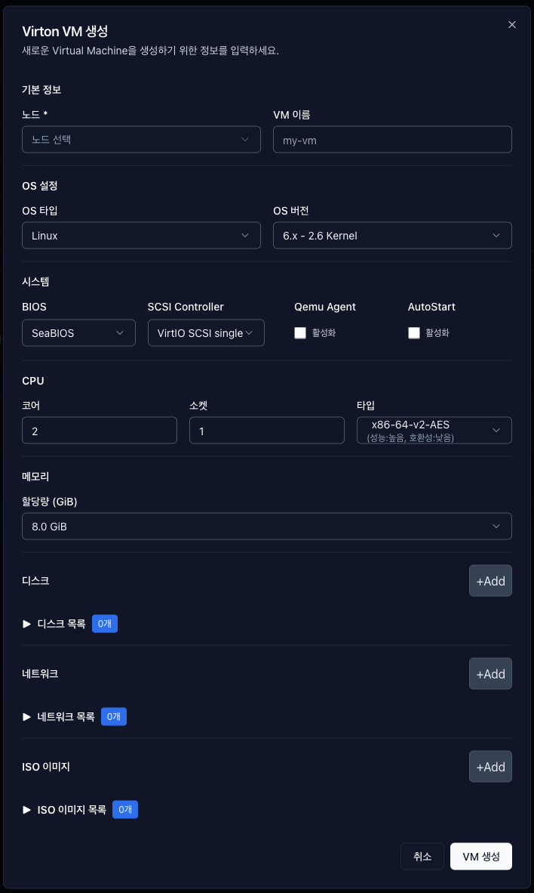
1. 기본 정보
노드: 가상 머신이 생성되고 구동될 물리적 서버 위치를 선택합니다.
VM 이름: 영문 대소문자, 숫자, 하이픈(-)만 사용 가능하며, 이외의 특수문자나 한글 입력 시 생성이 제한됩니다.
2. OS 설정
OS 타입: 가상 머신에 설치할 운영체제의 종류(Linux, Windows 등)를 선택합니다. 이는 가상화 최적화 드라이버 설정의 기준이 됩니다.
OS 버전: 선택한 OS 타입에 맞춘 세부 커널 버전을 지정합니다. (예: Linux의 경우
6.x - 2.6 Kernel). 프록스목스 하이퍼바이저가 해당 OS에 가장 최적화된 하드웨어 프로필을 제공하도록 돕습니다.
3. 시스템 (System)
BIOS: 가상 머신의 부팅 펌웨어 방식을 결정합니다. 일반적으로 기본값인
SeaBIOS(Legacy 호환)를 사용하며, 최신 OS 규격이나 특정 요구사항(보안 부팅 등)에 따라 UEFI 방식의 펌웨어로 변경할 수 있습니다.SCSI Controller: 가상 디스크와의 데이터 입출력(I/O) 통신을 담당하는 컨트롤러입니다. 기본값인
VirtIO SCSI single은 최신 가상화 환경에서 가장 빠르고 안정적인 I/O 성능을 제공합니다.Qemu Agent (권장): 활성화 시, 호스트 서버(프록스목스)와 가상 머신(게스트 OS) 간의 전용 통신 채널을 엽니다. 이 기능이 켜져 있어야 대시보드에서 VM의 실시간 IP 주소를 확인할 수 있으며, 전원 종료 시 강제 종료가 아닌 ‘안전한 종료(Graceful Shutdown)’가 가능해집니다.
Auto Start: 활성화 시, 호스트(노드) 재부팅 후 가상 머신이 자동으로 시작됩니다. 운영 서비스용 VM은 장애 복구 및 무중단 운영을 위해 이 옵션 활성화를 권장합니다.
4. 리소스 설정 (CPU / 메모리)
CPU 코어/소켓: 가상 머신에 할당할 물리적·논리적 프로세서 수를 지정합니다.
CPU 타입: CPU의 명령어 세트를 선택합니다. (예:
x86-64-v2-AES는 암호화 가속 기능을 지원하여 보안 성능을 향상시킵니다.)메모리: 가상 머신이 사용할 전용 RAM 용량을 설정합니다. 시스템 안정성을 위해 최소 512MiB 이상 설정을 권장합니다.
5. 리소스 리스트 (디스크 / 네트워크 / ISO)
ISO 이미지: 운영체제 설치를 위한 원본 이미지 파일을 선택합니다. [+Add] 버튼을 눌러 스토리지에 업로드된 ISO 파일을 지정할 수 있습니다.
네트워크: 가상 머신이 사용할 브리지(Bridge)와 VLAN 설정을 추가합니다. [+Add] 버튼으로 다중 네트워크 인터페이스 구성이 가능합니다.
디스크: 가상 머신의 저장 공간을 생성합니다. [+Add] 버튼을 통해 여러 개의 가상 디스크를 추가할 수 있으며, 세부 설정은 다음과 같습니다.
Device: 디스크가 연결될 버스 타입과 순번(예:
scsi0)을 표시합니다.Storage: 가상 디스크 파일이 실제로 저장될 물리적/논리적 저장소 위치를 선택합니다.
Disk size (GiB): 가상 머신에 할당할 디스크의 최대 용량을 지정합니다.
Format: 디스크 이미지의 형식을 결정합니다. 기본값인
QEMU image format (qcow2)는 스냅샷 생성 및 유연한 용량 관리(씬 프로비저닝)를 완벽하게 지원하는 권장 포맷입니다. (단, 선택한 스토리지가 블록 기반인 경우 이 설정은 무시되고 최고 성능을 위해 자동으로raw형식으로 고정될 수 있습니다.)
VM 생성 입력값 요약#
항목 |
입력/선택 기준 |
|---|---|
노드 |
클러스터에 등록되어 있고 온라인 상태인 노드를 선택합니다. |
VM 이름 |
영문 대소문자, 숫자, 하이픈(-)만 사용합니다. |
CPU/메모리 |
대상 노드의 가용 자원을 초과하지 않도록 설정합니다. 메모리는 최소 512MiB 이상을 권장합니다. |
디스크 |
대상 스토리지의 여유 공간을 확인하고 용량을 지정합니다. |
네트워크 |
생성된 브리지 또는 VLAN 설정 중 VM에 연결할 네트워크를 선택합니다. |
ISO 이미지 |
사전에 업로드된 ISO 이미지를 선택합니다. 목록에 없으면 템플릿/업로드 메뉴에서 먼저 등록합니다. |
4.4.2.2 VM 설정 (부팅 순서 변경)#
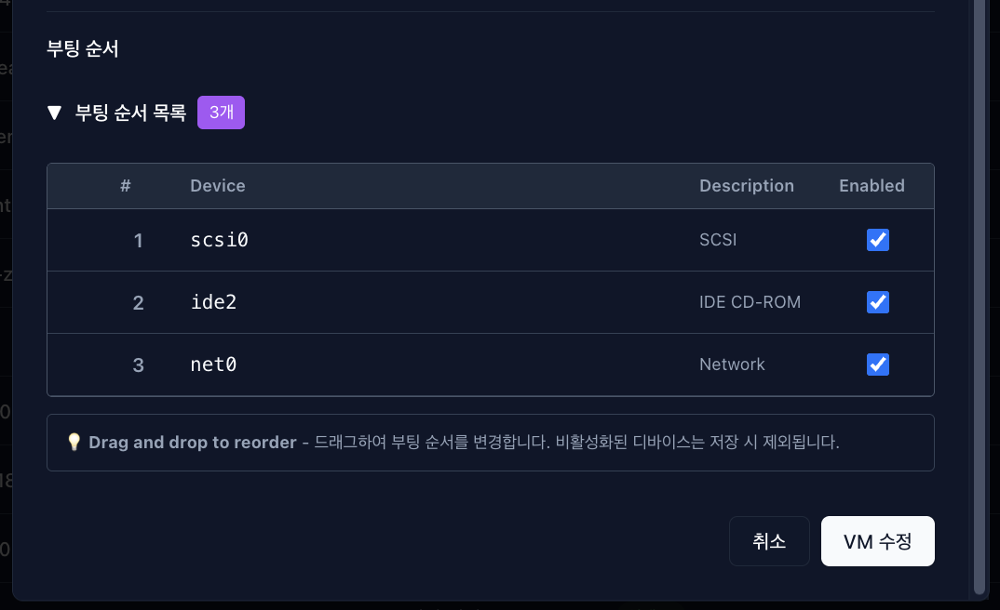
VM설정은 기존 설정되어있는 값들을 가져오며 부팅 순서는 설정(수정) 페이지 에서만 변경 가능합니다.
부팅 순서: 가상 머신(VM)의 전원이 켜질 때, 어떤 장치(디스크, CD-ROM, 네트워크 등)에서 운영체제(OS)를 가장 먼저 읽어 들일지 탐색 순서를 결정하는 기능입니다. 물리적 PC의 BIOS/UEFI 부팅 설정과 완벽하게 동일한 역할을 합니다.
4.4.2.3 CT 생성 (LXC Container)#
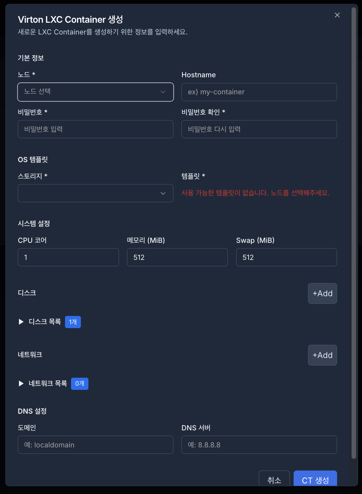
노드: 컨테이너가 생성되고 자원이 할당될 물리적 서버(노드)를 선택합니다.
Hostname: 영문, 대소문자, 숫자, 하이픈(-)만 사용 가능하며, 이외 입력시 생성 제한됩니다.
비밀번호 / 비밀번호 확인: 컨테이너의 최상위 관리자(root) 계정에서 사용할 초기 비밀번호를 설정합니다. 보안 강화를 위해 두 입력 필드의 내용이 일치해야 하며, 정책에 따른 강력한 비밀번호 설정이 요구됩니다.
OS 템플릿:
스토리지: 템플릿 파일이 저장되어 있는 저장소를 선택합니다.
템플릿: 컨테이너 배포의 기반이 될 운영체제 이미지(Ubuntu, CentOS 등)를 선택합니다. 사용 가능한 템플릿이 없는 경우 사전에 업로드 또는 다운로드가 필요합니다.
시스템 설정:
CPU 코어: 컨테이너가 사용할 CPU 코어 수를 지정합니다.
메모리 / Swap: 컨테이너에 할당할 RAM 용량과 가상 메모리(Swap) 용량을 설정합니다.
리스트 (Disk, Network):
디스크: 컨테이너 내부에서 사용할 저장 공간을 구성합니다. [+Add] 버튼을 클릭하여 마운트 포인트나 추가 디스크 공간을 설정할 수 있습니다.
네트워크: 가상 인터페이스와 네트워크 브리지 설정을 수행합니다. [+Add] 버튼을 통해 다중 네트워크 환경을 구성할 수 있습니다.
DNS 설정:
도메인 / DNS 서버: 컨테이너가 외부 네트워크와 통신하거나 이름을 해석할 때 사용할 도메인 이름과 네임 서버 주소를 지정합니다.
CT 생성 입력값 요약#
항목 |
입력/선택 기준 |
|---|---|
Hostname |
영문 대소문자, 숫자, 하이픈(-)만 사용합니다. |
비밀번호/비밀번호 확인 |
두 값이 일치해야 하며, 운영 정책에 맞는 강한 비밀번호를 사용합니다. 비밀번호 원문은 제출문서에 기재하지 않습니다. |
OS 템플릿 |
스토리지에 등록된 LXC 템플릿을 선택합니다. 템플릿이 없으면 업로드 또는 다운로드 후 다시 생성합니다. |
CPU/메모리/Swap |
대상 노드의 가용 자원을 기준으로 설정합니다. |
디스크/네트워크 |
스토리지, 마운트 포인트, 브리지, VLAN 등 운영 환경에 맞는 값을 선택합니다. |
4.4.3 인스턴스 상세 정보#
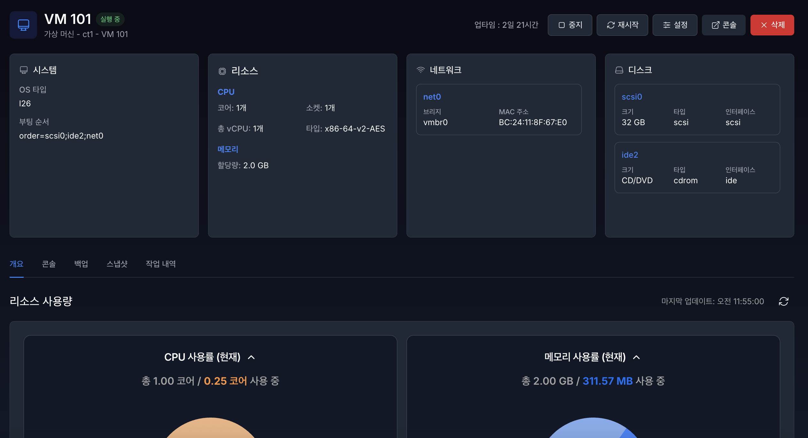
해당 VM/CT 의 이름을 클릭하면 상세 페이지로 진입합니다.
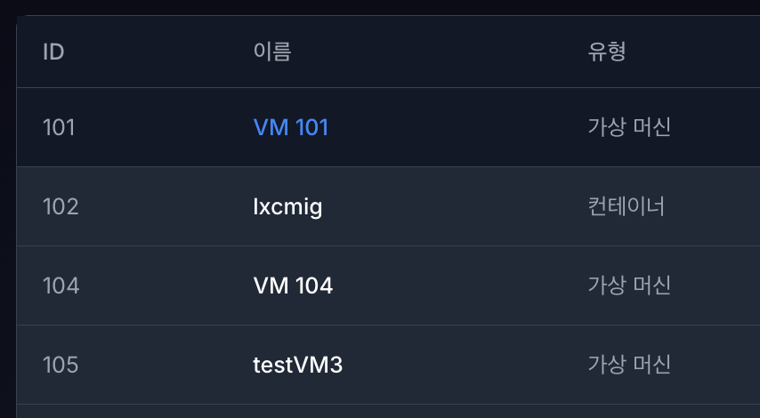
4.4.3.1 시스템 정보#
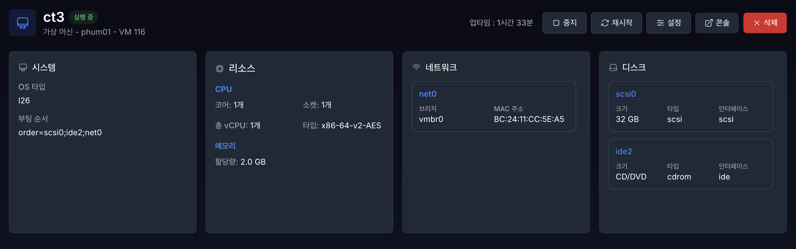
상세 페이지에서 해당 VM/CT 시스템 정보 (OS, 부팅 순서), 리소스, 네트워크, 디스크 정보를 확인할 수 있습니다.
인스턴스 제어 버튼: 상단 우측의 버튼을 통해 인스턴스의 상태를 관리합니다.
중지/재시작: 인스턴스의 전원을 제어합니다.
설정: CPU, 메모리 등 할당된 자원을 수정합니다.
콘솔: 인스턴스 내부로 접속하기 위한 터미널 환경을 호출합니다.
삭제: 해당 인스턴스와 관련 자원을 영구적으로 제거합니다.
시스템: 운영체제(OS) 타입과 부팅 순서(Boot Order) 등 기본 구동 정보를 표시합니다.
리소스: 할당된 CPU 코어 수, vCPU 수, 프로세서 타입(예: AES 암호화 가속 지원 여부) 및 메모리 용량을 표시합니다.
네트워크: 인스턴스에 연결된 네트워크 인터페이스명, 브리지(vmbr), 고유한 MAC 주소 정보를 제공합니다.
디스크: 가상 디스크의 식별자(scsi0 등), 용량, 인터페이스 타입을 표시합니다.
4.4.3.2 리소스 사용량 및 트렌드 (Monitoring)#
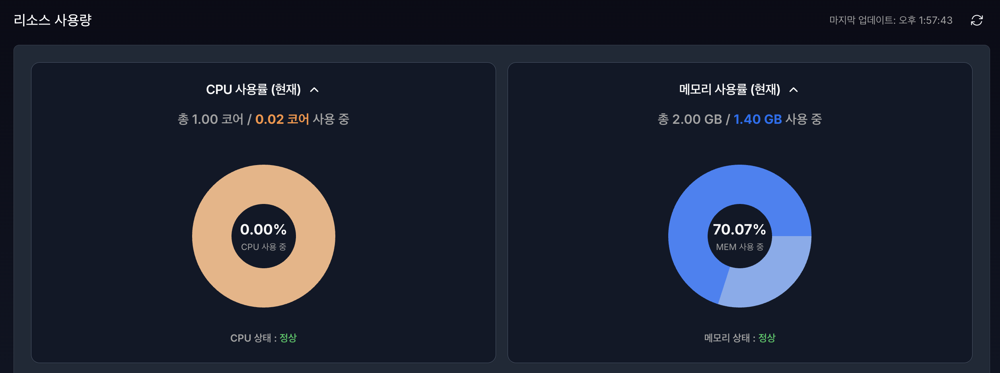
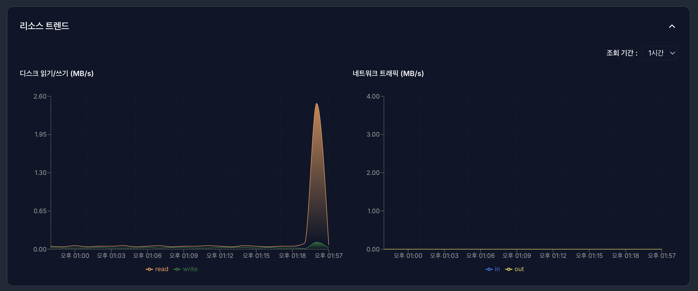
실시간 리소스 사용량 (Gauges):
CPU 사용률: 전체 할당량 대비 현재 사용 중인 CPU 코어 비중을 백분율(%)로 표시합니다.
메모리 사용률: 전체 할당 메모리 중 현재 점유 중인 용량을 실시간으로 확인합니다.
상태 표시: 자원 사용량이 안정적인 경우 ‘정상’ 상태로 표기되어 관리자의 빠른 판단을 돕습니다.
리소스 트렌드 (Historical Charts):
디스크 읽기/쓰기 (MB/s): 시간대별 디스크 입출력(I/O) 속도를 그래프로 나타내어 병목 현상을 파악합니다.
네트워크 트래픽 (MB/s): 인입(In) 및 유출(Out) 트래픽의 변화 추이를 모니터링합니다.
조회 기간 설정: 우측 상단의 드롭다운을 통해 최근 1시간 등 원하는 범위의 데이터를 필터링할 수 있습니다.
4.4.3.3 콘솔 접속 (Console)#
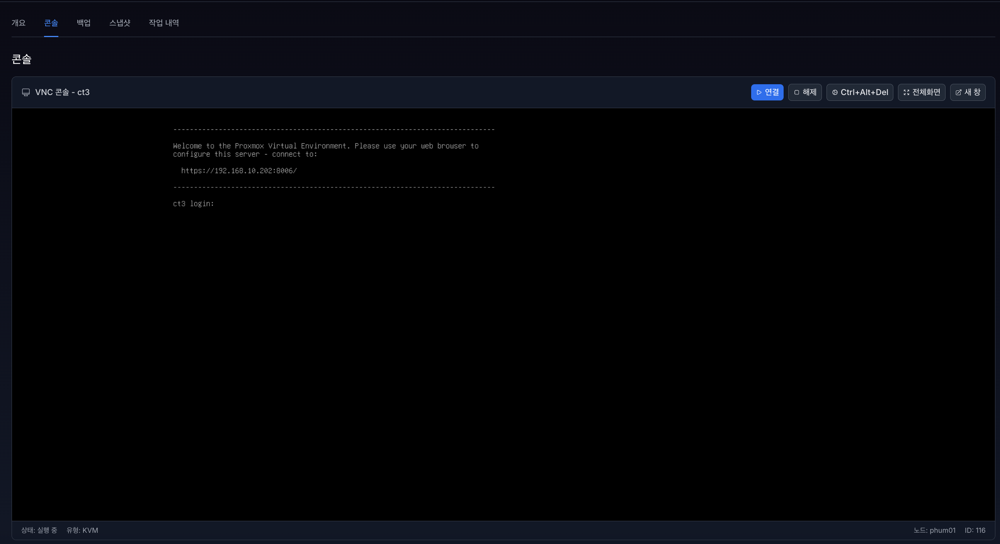
VNC 콘솔 연결: 표준 VNC(Virtual Network Computing) 프로토콜을 사용하여 웹 브라우저 내에서 가상 인스턴스의 데스크톱 또는 터미널 화면을 호출합니다.
주요 제어 기능:
연결 / 중지: 인스턴스와의 콘솔 세션을 활성화하거나 안전하게 종료합니다.
재시작: 인스턴스를 재부팅 합니다.
전체화면: 작업 화면을 전체화면으로 확대하여 가독성을 높입니다.
새 창: 별도의 브라우저 창에서 콘솔을 실행하여 멀티태스킹 환경을 지원합니다.
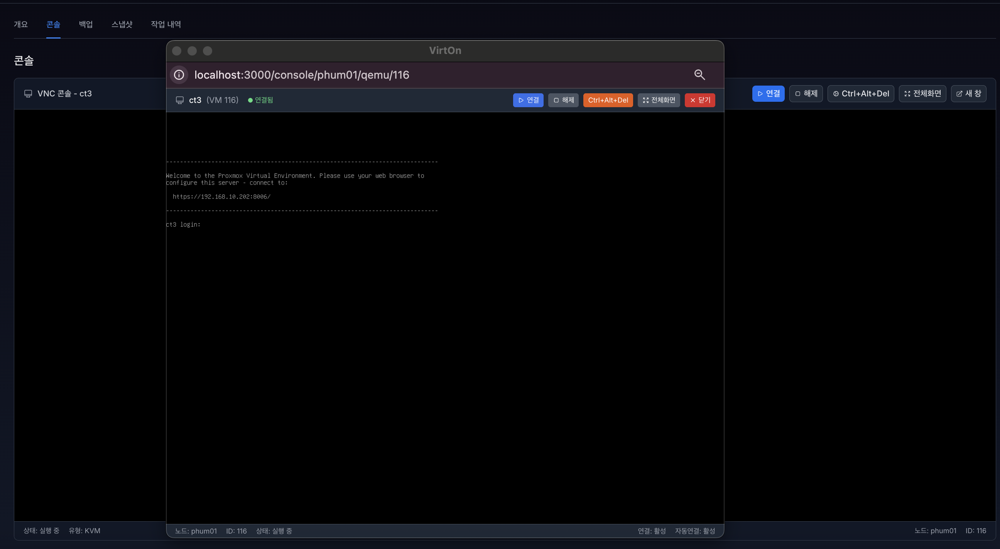
키 전송: 가상 환경에서 직접 입력하기 어려운 특수 키 조합(예: Ctrl+Alt+Del)을 전송하여 시스템 명령을 수행합니다.
실시간 상태 표시: 콘솔 하단 바를 통해 해당 인스턴스의 실행 상태(Status), 가상화 유형(KVM/LXC), 소속 노드 및 고유 ID 정보를 실시간으로 확인할 수 있습니다.
콘솔 접속이 실패하면 VM/CT 실행 상태, 콘솔 접근 권한, 브라우저 팝업 차단 여부를 확인합니다.
4.4.3.4 백업#
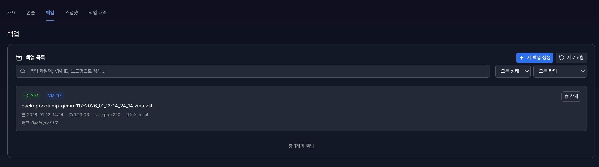
백업 기능은 가상 머신(VM) 또는 컨테이너(CT)의 현재 상태와 데이터를 별도의 저장 공간에 보관하여, 장애 발생 시 시스템을 신속하게 복구하기 위한 핵심 기능입니다.
백업 생성
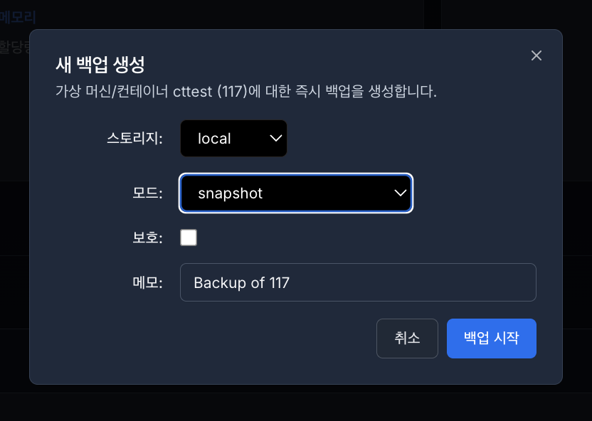
스토리지: 백업 파일이 저장될 물리적 위치(예: local, nfs-storage 등)를 선택합니다.
모드 (Mode): 백업 수행 방식을 선택합니다.
Snapshot: 인스턴스를 중단하지 않고 실시간으로 백업을 수행합니다.
Suspend/Stop: 인스턴스를 일시 정지하거나 종료한 후 백업하여 데이터 정합성을 극대화합니다.
보호 (Protection): 해당 체크박스를 선택하면 백업 파일이 실수로 삭제되는 것을 방지합니다.
메모 (Note): 백업 파일에 대한 식별 정보나 설명을 입력하여 추후 복구 시 참고 자료로 활용합니다.
인스턴스 타입 선택: 백업 대상의 유형(VM(QEMU) 또는 Container(LXC))을 지정하여 필터링된 목록에서 대상을 선택할 수 있습니다.
백업 목록 및 상태 관리
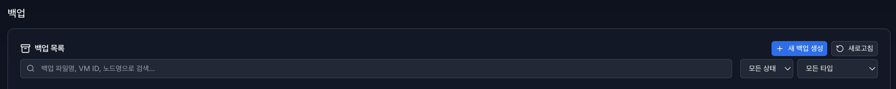
백업 목록 조회: 백업 파일명, 대상 VM ID, 소속 노드 및 저장소 정보를 한눈에 확인합니다.
검색 및 필터링: * 검색창: 파일명이나 VM ID를 입력하여 특정 백업본을 빠르게 찾습니다.
상태 필터: ‘완료’, ‘실패’, ‘진행 중’ 상태별로 목록을 분류하여 관리 효율성을 높입니다.
타입 필터: VM 또는 컨테이너별 백업 내역을 구분하여 조회합니다.
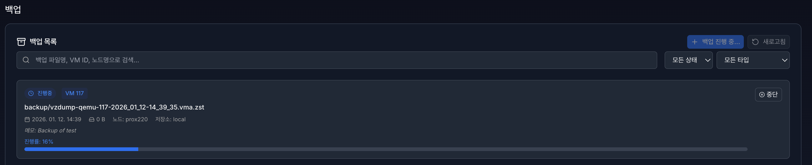
진행 상태 표시: 백업이 수행 중인 경우, 실시간 진행률(%)과 상태바를 통해 작업 완료 예상 시점을 파악할 수 있습니다. 필요한 경우 ‘중단’ 버튼을 눌러 작업을 즉시 멈출 수 있습니다.
백업 생성이 실패하면 대상 스토리지 용량, 백업 모드, VM/CT 상태, Proxmox 작업 이력을 확인합니다.
4.4.3.5 스냅샷#
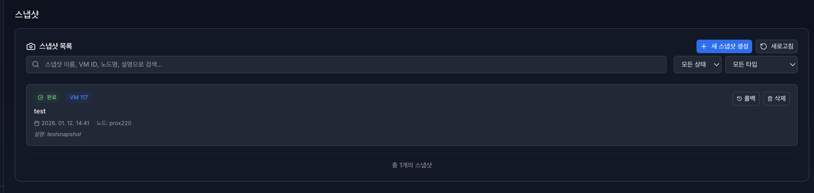
스냅샷 기능은 특정 시점의 가상 머신(VM) 또는 컨테이너(CT) 상태를 그대로 보존하여, 설정 오류나 시스템 장애 발생 시 저장된 시점으로 즉시 되돌릴 수 있는 기능을 제공합니다.
스냅샷 생성
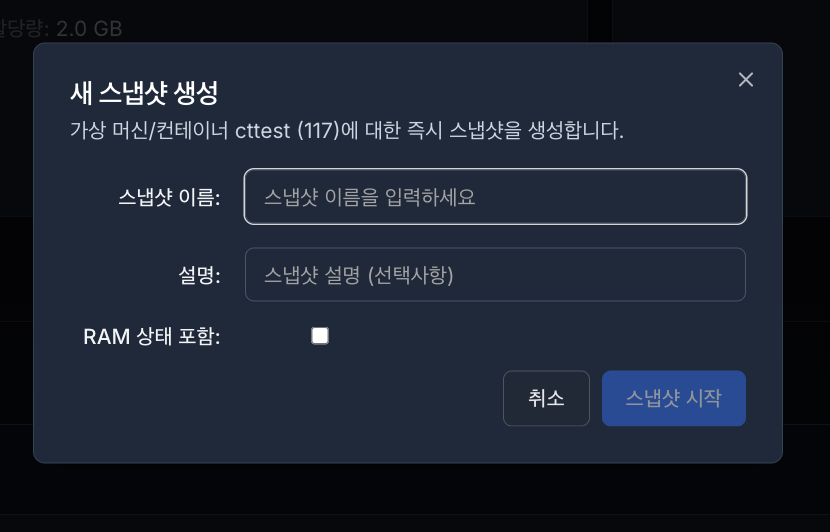
스냅샷 이름: 스냅샷을 식별하기 위한 명칭을 입력합니다. (예:
before_update,stable_config등)설명 (선택사항): 스냅샷 생성 이유나 당시의 시스템 상태에 대한 추가 정보를 기록하여 관리의 편의성을 높입니다.
RAM 상태 포함: 이 옵션을 선택하면 가상 머신의 디스크 데이터뿐만 아니라 현재 실행 중인 메모리(RAM) 상태까지 함께 저장합니다.
체크 시: 복구 후 전원을 켤 필요 없이 작업 중이던 상태 그대로 즉시 실행됩니다.
미체크 시: 디스크 상태만 저장되며, 복구 후에는 시스템을 새로 부팅해야 합니다.
스냅샷 목록 및 제어
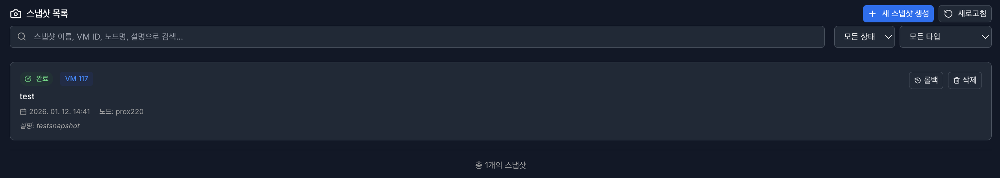
스냅샷 목록 조회: 스냅샷 이름, 생성 일시, 소속 노드 및 설명 정보를 확인합니다.
상태 표시: 현재 인스턴스가 어떤 스냅샷 지점에 있는지, 혹은 스냅샷 생성 이후 얼마나 변경되었는지를 시각적으로 파악할 수 있습니다.
주요 작업 버튼:
롤백 (Rollback): 선택한 스냅샷 시점으로 가상 자원의 상태를 되돌립니다. 현재의 모든 변경 사항은 사라지고 스냅샷 시점의 데이터로 덮어씌워집니다.
삭제 (Remove): 저장된 스냅샷 파일을 영구적으로 제거하여 스토리지 공간을 확보합니다.
4.4.4 문제 해결 방법#
증상 |
확인 항목 |
조치 방법 |
|---|---|---|
VM/CT 생성 실패 |
이름 형식, 필수값, 노드/스토리지 용량 |
입력값을 수정하고 대상 노드의 자원 여유를 확인합니다. |
ISO 또는 템플릿이 보이지 않음 |
저장 데이터 유형, 업로드 위치 |
템플릿/업로드 메뉴에서 올바른 스토리지에 파일을 등록합니다. |
전원 제어 실패 |
현재 상태, 권한, Proxmox 작업 이력 |
상태를 새로고침하고 작업 이력에서 실패 사유를 확인합니다. |
콘솔 접속 실패 |
VM/CT 실행 상태, 브라우저 설정, 권한 |
인스턴스가 실행 중인지 확인하고 콘솔 접근 권한을 점검합니다. |
백업/스냅샷 실패 |
스토리지 용량, 스냅샷 지원 여부, 작업 충돌 |
스토리지 기능과 진행 중인 작업을 확인한 뒤 다시 수행합니다. |